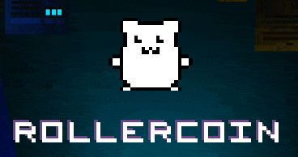
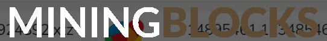

1. SeoSprint - Букс по зароботку дополнительных денег
p.s чтобы открыть сайт нажми на картинку
Зарабатывать можно на простых заданиях. Минимальный вывод: 0.20$
2. TaskPay - Букс по зароботку дополнительных денег
p.s чтобы открыть сайт нажми на картинку
Зарабатывать можно на простых заданиях. Минимальный вывод: 0.50$
3. serfclick - Букс по зароботку дополнительных денег

p.s чтобы открыть сайт нажми на картинку
Зарабатывать можно на простых заданиях а также на серфинге. Минимальный вывод: 0.05$
4. Taxi-money - Экономическая игра
p.s чтобы открыть сайт нажми на картинку
При регистрацыи вам будет выдана такси "Бамбила" с ней вы сможете заработать 0.40$, также в игре присуствует ежедневный бонус. Промокод на скидку 15% на любую покупку "XGNYBTQBQPFEUNS". Минимальный вывод: 0.04$
5. RollerCoin - псевдомайнинг
p.s чтобы открыть сайт нажми на картинку
Игра c заработком которая не заставит тебя заскучать количество микроигр поражает, если вы ищите проект на долгосрок то этот проект точно для вас
6. MiningBlock - псевдомайнинг
p.s чтобы открыть сайт нажми на картинку
Похожая на роллеркойн только здесь нужно смотреть рекламу а не играть в игры, если ищещь проект на долгосрок то этот тебе тоже подойдет
7. LtcWhale - псевдомайнинг
p.s чтобы открыть сайт нажми на картинку
Псевдомайнинг лайткойна, доход в день 0.00014LTC. Минимального порога вывода нету
8. AutoHashMining - псевдомайнинг
p.s чтобы открыть сайт нажми на картинку
Заходим регистрируемся, Ждем пока выдадут бонус 0.05$ выдают днем в радиусе 14:00 - 20:00 и сразу можем выводить на свой USDT кошелек
9. GraiBtc - Кран
p.s чтобы открыть сайт нажми на картинку
Кран по сбору их токенов, токены можно обменять на USDT, 1 сбор = 1 токен(0.001USDT). Минимальный вывод: 1 токен
10. NftFerma - С вложениями
p.s чтобы открыть сайт нажми на картинку
Зарабатывать можно на ежедневных бонусах, серфинге, промокодах которые часто скидывают в их официальном телеграм чате, а также за видеообзор дают от 20 до 500 трон. Чтобы выводить нужно пополнить баланс на 10 трон